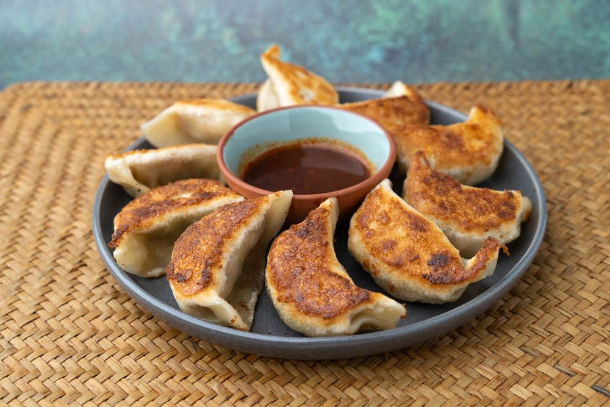

Chinese Potstickers

Description
The word potsticker comes from the Chinese word wotip which literally means pot stick.
Generally, wotip refers to pan fried dumplings, and this is just one of the thousands of varieties of dumplings found in cuisines all across the world.
Even in just Chinese cuisine, you'll find dumplings with savory or sweet fillings, prepared in all sorts of methods.
No one agrees on the exact origin of Chinese potstickers, but by one account, these came about when a chef of the Imperial Court accidentally left dumplings cooking in a wok, burning the bottom and claiming them as his own special creation.
This recipe is taken from Made With Lau.
Ingredients
- 454g chicken
- 4 stalk celery
- 454g cabbage
- 28g ginger
- 1 tbsp oyster sauce
- 1 tbsp soy sauce
- 1 tbsp fish sauce
- 1 tsp white pepper
- 1 tbsp chicken bouillon powder
- 1 tsp sugar
- 1 tsp salt
- 3 tbsp cornstarch
- 2 tbsp water
- 1 tbsp sesame oil
- 2 tbsp oil
- 1 pack potsticker wrappers
- 1 tbsp white vinegar
- 1 tsp chili oil
- 1/2 tsp sugar
Steps
- Cut the chicken. Partially freeze it to have an easier time cutting the chicken into very thin slices. Overlay the slices and cut them into very thin slices. Overlay the slices and cut them into thin strips. Rotate them 90 degrees and mince the chicken into small bits. Set aside in a large bowl.
- In a small bowl, mix the oyster sauce, soy sauce, fish sauce, white pepper, chicken bouillon powder, sugar, salt, cornstarch, and water. Once fully combined, add to the chicken and knead until the meat is fully coated.
- Mince the celery and cabbage and place into a medium-size bowl. For one minute, blance the vegetables to remove the grassy taste, drain, and squeeze out the excess water. Doing this will ensure that the filling won't be too wet, which will make wrapping the potstickers easier.
- Cut the ginger just like the chicken and mix it together with the vegetables and meat, including sesame oil. Make sure the consistency isn't too wet, otherwise, pour out the liquid. If not, you can add more cornstarch or pop the filling into the fridge to firm it up for handling.
- Set up your wrapping station by having a bowl of water within reach aside from the filling and wrappers. It will also be useful to have a tray to place the wrapped potstickers.
- Place the wrapper in your non-dominant hand, unfloured side up. Add 2 tsp of filling to the center and brush water along the edge of the wrapper. Hold the unwrapped dumpling and cup it into a half-moon fold. Start on one side of the opening and fold small amounts of dough on top of one another making a pleat. Make five pleats with equal distance to each other, creating a semblance of ruffles.
- Cook the potstickers.
- Add oil and place potstickers in the pan. You'll want to evenly space the potstickers around the pan without touching each other.
- Turn on medium-high heat, pour water that's just enough to go half-way up the potstickers into the pan and place the lid on.
- Cook for about 3-4 minutes until the water starts to boil. Turn theh eat on low and continue to cook until the water is almost fully evaporated.
- Remove the lid, shift the potstickers around to prevent sticker, and add more oil.
- Place the lid back on for another 30 seconds or until the oil is absorbed and the potstickers get crispy. You'll know they're done when you pick them up and look underneath them. If they're golden brown, that means they're nice and fragrant.
- Flip the potstickers over and cook for an additional minute.
- Remove the lid and turn off the heat.
- In a small bowl, mix the vinegar, chili oil, and sugar.
- Taste to adjust the flavors of the sauce and plate once it's to your taste! This is usually served on a large serving plate and everyone can take the amount they want.